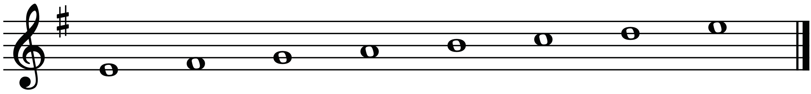
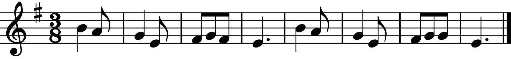

Note that even though a major key and its relative minor use the same notes, they have different starting notes (tonic). This makes them sound different. In major keys, the tonic note is do while in minor keys, the tonic note is la. Table 2.2 shows a summary of relative minor scales for the C, F and G major scales.
Table 2.2: Relative minor scales for the C, F and G major scales
| S/N | Major scale | ^6 | Relative minor scale |
| 1 | C | Note A | A |
| 2 | F | Note D | D |
| 3 | G | Note E | E |
Another way to identify the relative minor of the major key is to count three half steps down from the major key’s first note. For example, if you start on G major, counting down three half steps leads to E minor, which is its relative minor. The same works in vice versa: count three half steps up to find the relative major of a minor key.
Note that, in order to determine the key of a musical piece, you must look at its pitch content. In particular, the last note should determine the name of its key. Normally, a piece of music should end on a note that gives the name of its key or scale. By looking at the final note or combination of notes in a piece, you should gain a clear idea of whether it is based on the major or the minor scale that is associated with its key signature. For example, a melody in Figure 2.35 uses a key signature for G major but ends with note E. This indicates that the key of the melody is in E minor.
